🎯 Pindutin ang mga icon o lokasyon upang i-unlock ang nakatagong kasaysayan, kultura, at kwento ng Padre Garcia, Batangas.
💡 I-click ang yugto upang suriin ang mga natatanging tala at makasaysayang kaganapan.
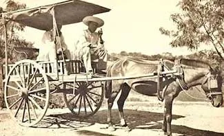
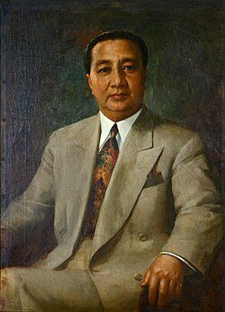
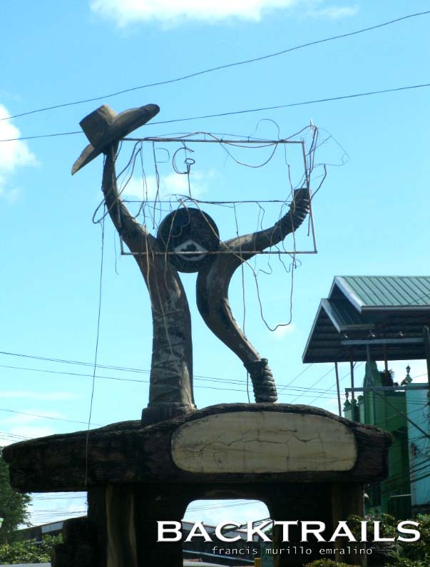
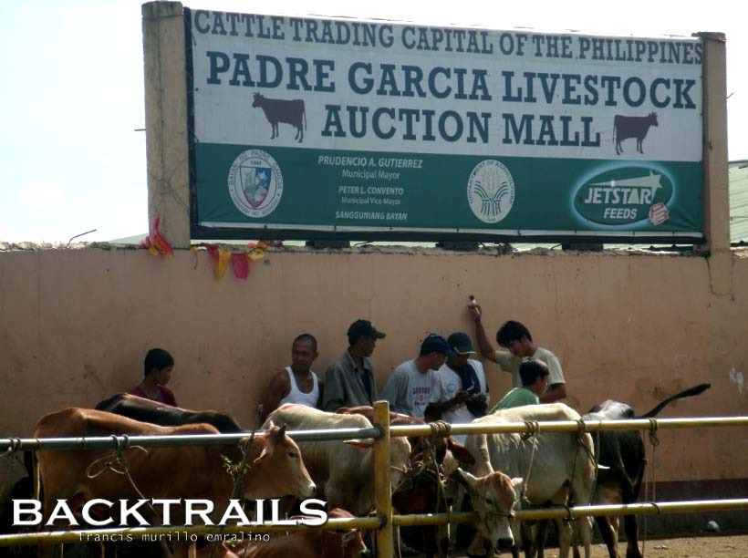
💡 Pumili ng kabanata upang silipin ang aming mga natatanging pamana at tradisyon.
Mga tradisyong may kinalaman sa debosyon, pananalig, at mga ritwal na maingat na ipinasa mula sa mga ninuno.
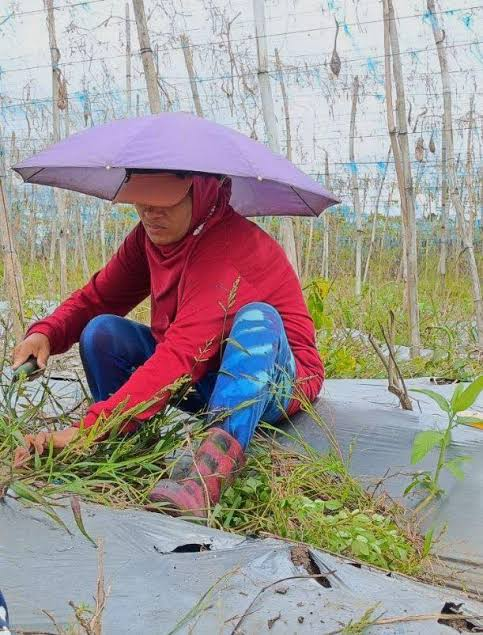
🌾 PasasalamatPagpapahayag ng taos-pusong pasasalamat sa kalikasan para sa masaganang ani, masiglang livestock, at matatag na kabuhayan.
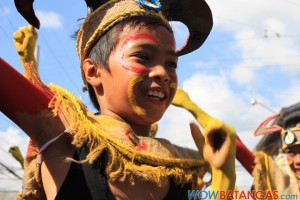
🤝 BayanihanAng diwa ng pagdadamayan sa mga kasalan, masasayang pista, at kusang-loob na pagtutulungan sa buong komunidad.
🎟️ Pindutin ang Ticket upang makuha ang iyong pass at silipin ang selebrasyon!
Lihim sa marami na ang dambuhalang pader ng lumang simbahan ay itinayo noong ika-18 siglo bilang isang matatag na kuta laban sa madugong salakay ng mga pirata! Ang taunang pista ng bayan ay hindi lamang simpleng kasiyahan, kundi nag-ugat sa makasaysayang pagdiriwang ng tagumpay at kaligtasan ng ating mga ninuno mula sa digmaan.
Isang kapanapanabik na paligsahan kung saan ipinapakita ng mga lokal na bakero ang kanilang galing sa paghawak ng mga baka. Sinasalamin nito ang tapang at husay ng mga Garciano bilang "Cattle Trading Capital of the Philippines
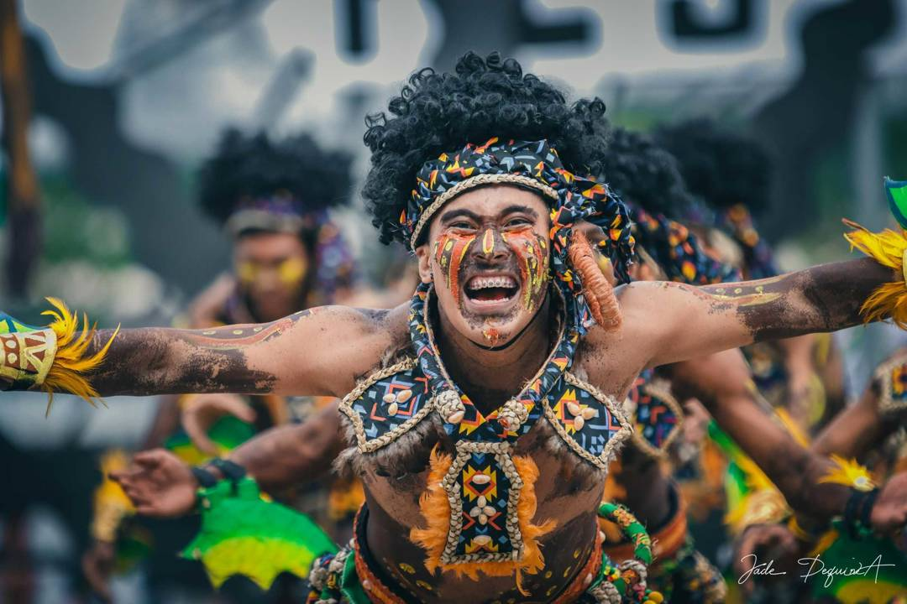
⭐ Trading Capital HubAng Padre Garcia ay kinikilala bilang "Sentro ng Kalakalan ng Baka sa Katimugang Tagalog". Sa loob ng mahigit 70 taon, ang industriyang ito ang naging pangunahing pinagkukunan ng kabuhayan.
Ang pag-aalaga at pagbebenta ng baka ay malaking tulong sa maraming pamilya sa Garcia. Dahil sa negosyong ito, nakakapag-ipon ang mga tao at nabibigyan ng magandang buhay ang kanilang pamilya. Kaya naman mas umuunlad at sumisigla rin ang ekonomiya ng buong komunidad.
Ang negosyo ng baka ay nag-uugnay sa mga magsasaka, tagapag-alaga, at mga mangangalakal sa Garcia. Sa kanilang pagtutulungan, mas nagiging matagumpay ang bentahan at mas maraming nabibigyan ng pagkakataong kumita. Ipinapakita nito ang diwa ng bayanihan at kooperasyon na ipinagmamalaki ng komunidad.
Higit pa sa komersyo, ang "Bakahan" ay sining ng pakikipagtawaran o 'patawaran' na minana pa sa mga ninuno. Ito ang kaluluwa ng taunang kapistahan at nagpapakita ng tatag at sipag ng kulturang Batangueño.
Pagtutulungan at kusang-loob na pagkakaisa sa pamayanan nang walang hinihintay na anumang kapalit.
Ang taos-pusong pagtanggap at pagrespeto sa kapwa bilang kapantay, kapatid, at mahalagang bahagi ng sarili.
Tradisiyunal na pagbibigay-galang sa mga nakatatanda sa pamamagitan ng pagmamano at paggamit ng mga salitang "po" at "opo".
Aktibong pagkalinga, pag-unawa, at pagtataguyod sa pangkalahatang kapakanan at kaligtasan ng buong komunidad.
✨ I-hover at pindutin ang mga larawan upang galugarin ang makasaysayang ganda ng ating bayan.
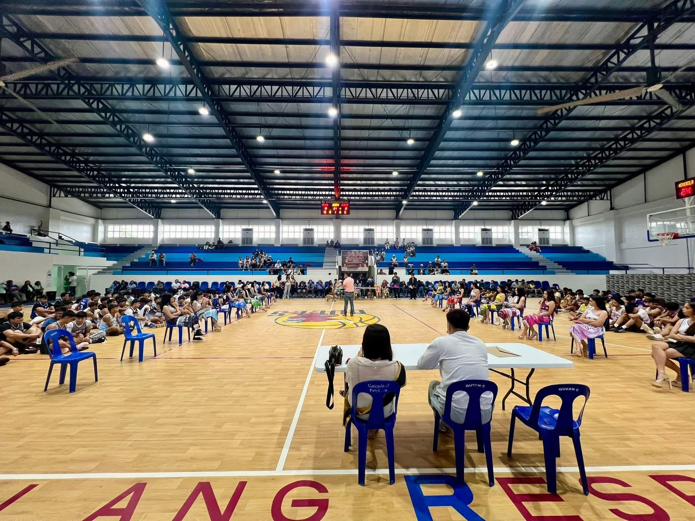
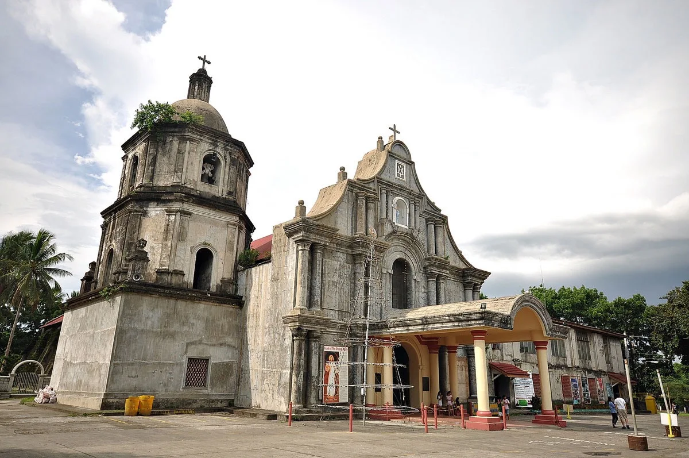
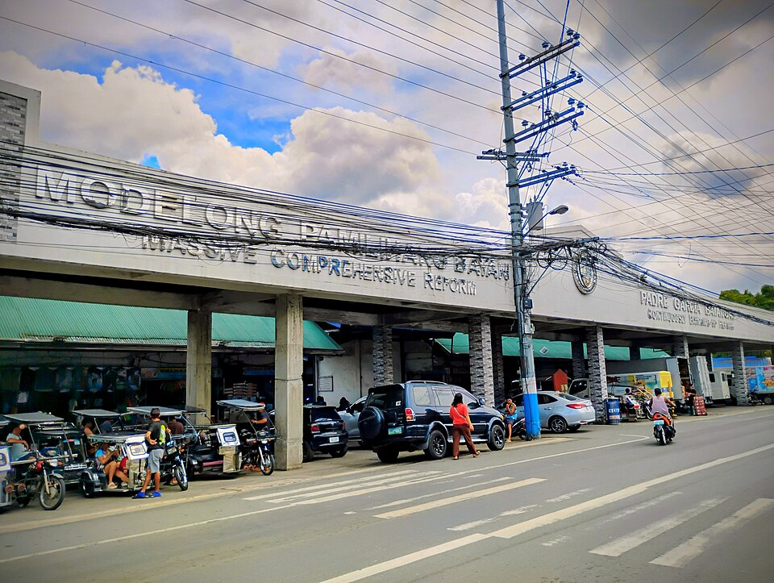
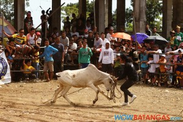
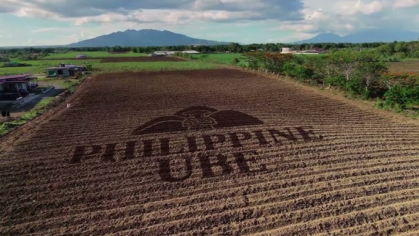
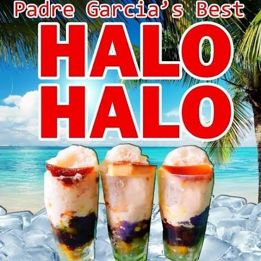
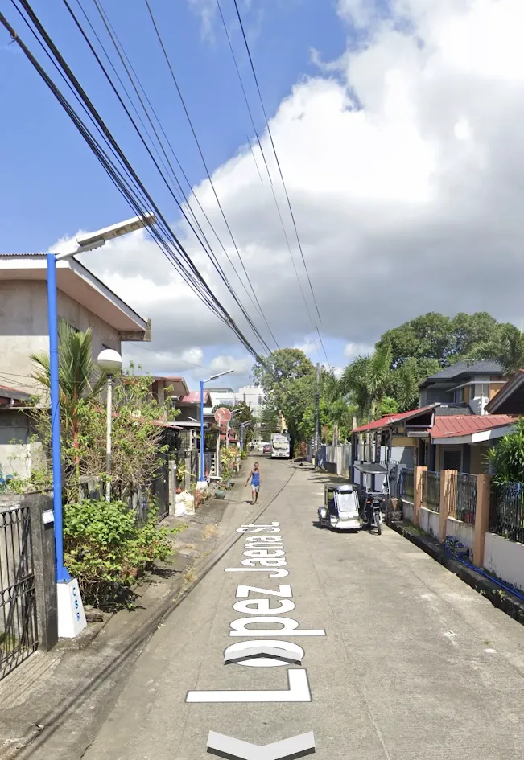
Maligayang Pagdating sa Cattle Capital! Ihanda ang inyong sarili sa isang makulay at masayang paggalugad sa ating kasaysayan at kultura. ✨🎈